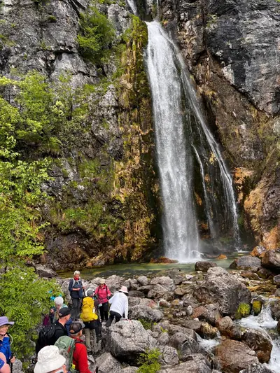

Como um story do Instagram, já aberto na página: as barrinhas em cima mostram o andamento. Toque na direita para avançar, na esquerda para voltar, segure para pausar.
Ask about the Alps triptap → next · tap ← back · hold to pause
Como os destaques do perfil do Instagram: cada bolinha é um momento da viagem. Tocou, abre o story em tela cheia.
Como o perfil do Instagram: grade de quadradinhos. Tocou, abre o post; arraste para o lado para ver as outras fotos daquele momento.
